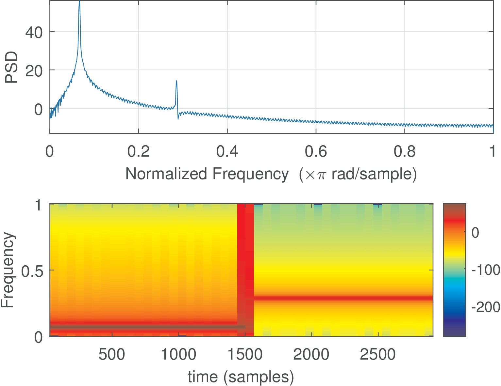
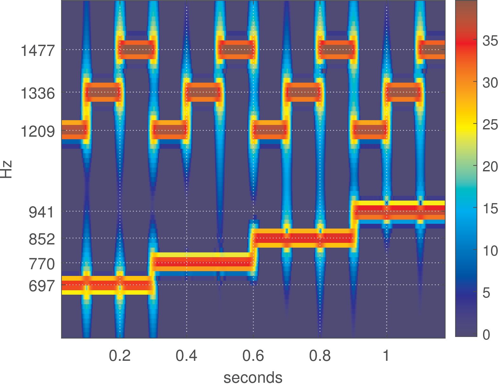
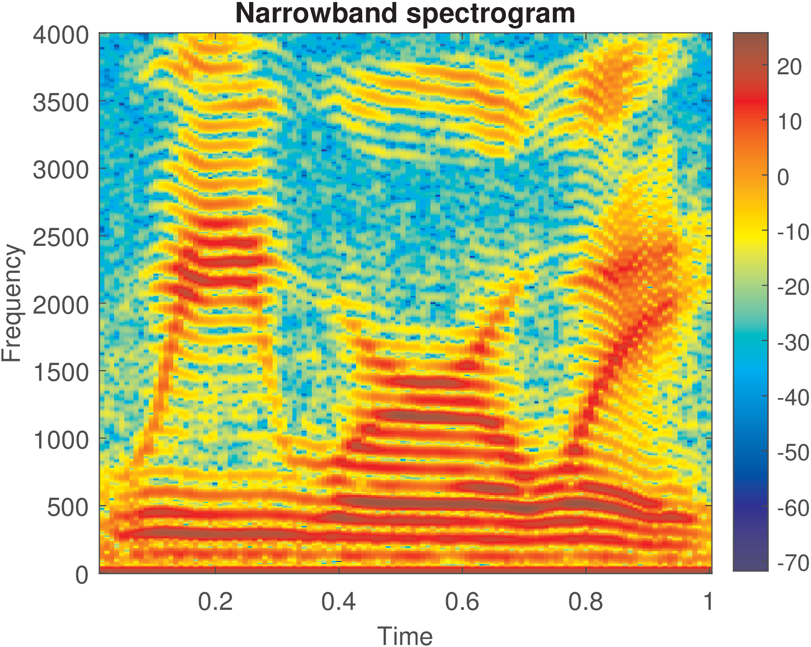
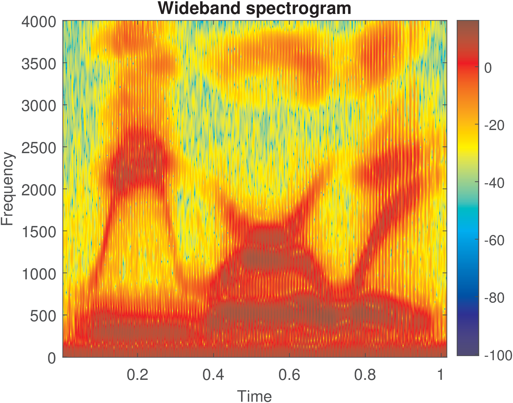

58 Time-frequency Analysis using the Spectrogram
4.9.1 Definitions of STFT and spectrogram
The PSD is a powerful tool to analyze signals in the frequency-domain. However, a single PSD fails when the signal “changes” over time. More strictly, if the signal cannot be assumed (WSS) stationary, alternative tools are potentially needed to describe how information varies in frequency and time domains. One relatively simple technique is the short-time Fourier transform (STFT).
The concept behind STFT is to extract segments of the signal under analysis using windowing and calculate several Fourier transforms, one for each segment. Mathematically, the STFT of a continuous-time signal is
|
|
(4.64) |
where is used to shift the window originally centered at . Eq. (4.64) can be interpreted by fixing and observing that is the Fourier transform of the windowed signal . The STFT is invertible and allows for recovering . However, in the sequel it is assumed that the phase can be discarded given that the main interest is to observe the distribution of power along frequency and time.
The spectrogram (for continuous-time)
|
|
(4.65) |
is defined as the squared magnitude of the STFT and is widely used to analyze nonstationary signals.

The specgram function in Matlab/Octave can be used to estimate spectrograms for discrete-time signals. Because is restricted to real numbers, a color scale can be used instead of a 3-d graph. For example, Listing 4.26 was used to generate Figure 4.19.
N=3000; %total number of samples n=0:N-1; %abscissa x1=100*cos(2*pi/30*n); %first cosine x2=1*cos(2*pi/7*n); %second cosine 5x=[x1 x2]; %concatenation of 2 cosines subplot(211), pwelch(x) %PSD subplot(212), specgram(x), colorbar %spectrogram
The code and Figure 4.19 illustrate that the PSD describes only the existence of two cosines but is not capable of informing their location in time. The spectrogram also indicates, by color, that the first half of the signal is composed of a cosine x1 with power (20 dB) greater than x2. The burst of power spread over the whole bandwidth at approximately occurs because the windowed signal at this specific FFT is composed by incomplete cycles of both cosines.
Matlab (but not Octave) has the spectrogram function. The companion software has ak_specgram, which represent two alternative functions to specgram9 with distinct input parameters.

As another spectrogram example, Figure 4.20 shows a sequence of all twelve dual-tone multi-frequency (DTMF) tones generated by the script figs_spectral_dtmf.m. In this case, each symbol has a 100 ms duration. It is possible to visually decode the signal. For example, the first symbol (left-most) is composed by a sum of sines of frequencies 697 and Hz (representing “1”) while the second is composed by frequencies 697 and Hz (symbol “2”) and so on. Note again the bursts of power at the transitions between symbols.
After creating dtmfSignal with kHz, the spectrogram of Figure 4.20 was generated with the commands below, and for a better visualization, the dynamic range was restricted to 40 dB via the parameter thresholdIndB:
filterBWInHz=40; %equivalent FFT bandwidth in Hz samplingFrequency=8000; %sampling frequenci in Hz windowShiftInms=1; %window shift in miliseconds thresholdIndB=40; %discards low power values below it 5ak_specgram(dtmfSignal,filterBWInHz,samplingFrequency,... windowShiftInms,thresholdIndB) %calculate spectrogram
4.9.2 Wide and narrowband spectrograms
A fundamental restriction of the STFT and, consequently, spectrograms, is the tradeoff between time and frequency resolution. When the window is made longer (its duration is increased), the frequency resolution improves but the time resolution gets worse. A spectrogram is called narrowband when the window is long and the FFT invoked by the spectrogram routine is equivalent to a bank of filters (see Application 4.4) with relatively narrow bandwidth. In contrast, a wideband spectrogram uses a short window and, consequently, the FFT corresponds to filters with relatively large bandwidths. The two spectrograms are contrasted here via an example using a speech signal. Speech is highly non stationary given that the information regarding the phonemes is encoded in segments composed of distinct frequencies. The sentence “We were away” was recorded with Hz using the Audacity free software and stored as a (RIFF) wav file.


Figure 4.21 and Figure 4.22 were generated with Listing 4.27.
[s,Fs,numbits]=readwav('WeWereAway.wav'); %read wav file Nfft = 1024; %number of FFT points M=64; %window length specgram(s,Nfft,Fs,hann(M),round(3/4*M)); colorbar, pause 5M=256;specgram(s,Nfft,Fs,hann(M),round(3/4*M));colorbar
Figure 4.22 shows a broadband spectrogram (good time resolution but poor frequency resolution) calculated with frames of 64 samples obtained by a Hann window. The frames had an overlap of 3/4 of the frame size, and the spectrum of each windowed signal is calculated through a 1024-points FFT. Zero-padding was used (1024 instead of 64) in order to sample more densely the DTFT of the windowed signal. The user is invited to try the command specgram(s,M,Fs,hann(M),0), which corresponds to not using zero-padding and overlapping to notice the improvements these two strategies bring.
Figure 4.21 simply increases the window length from 64 to 256 to create a narrowband spectrogram (poor time resolution and good frequency resolution). The narrowband version allows to see the harmonic structure due to the pitch (see Application 1.12) as horizontal strips in the graph. This harmonic structure appears in Figure 4.22 as vertical strips.